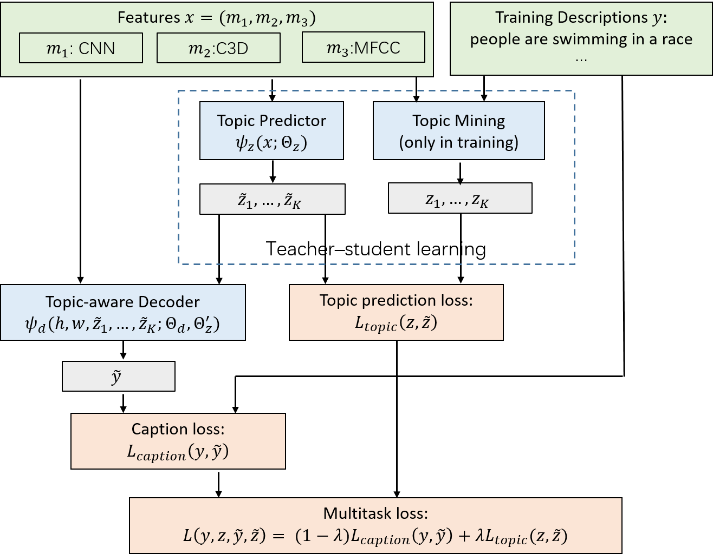
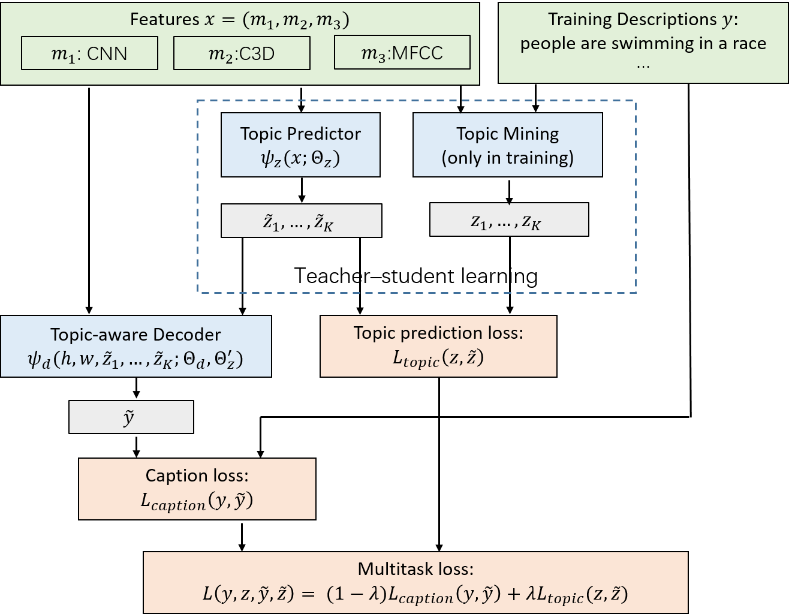
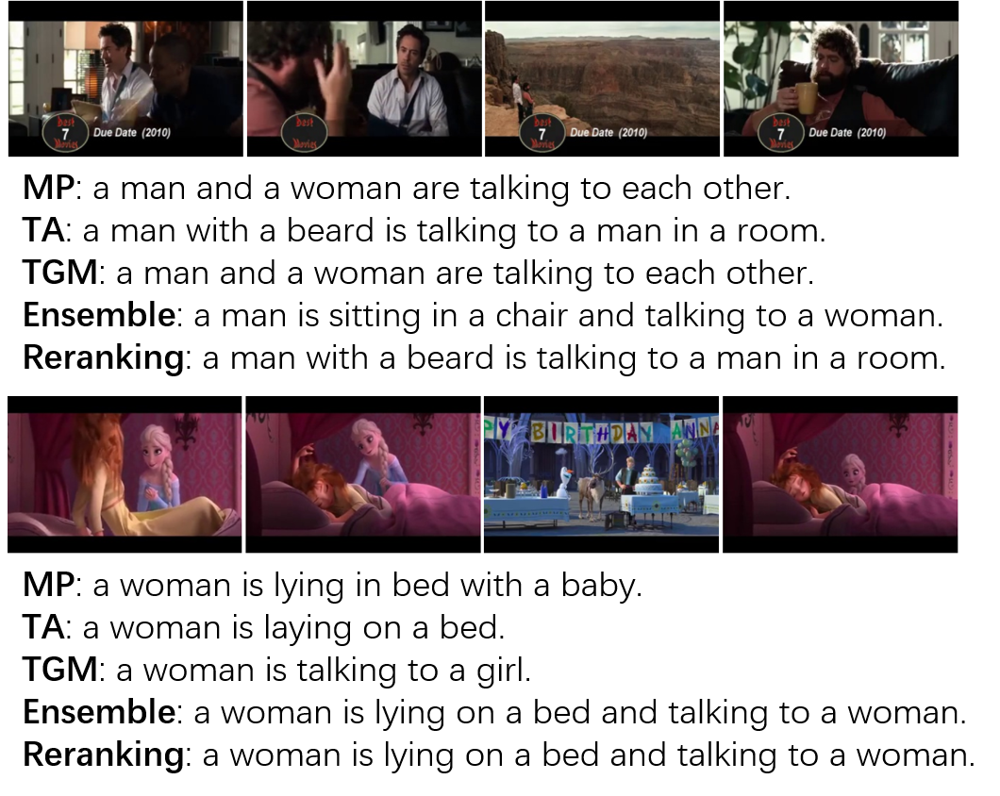
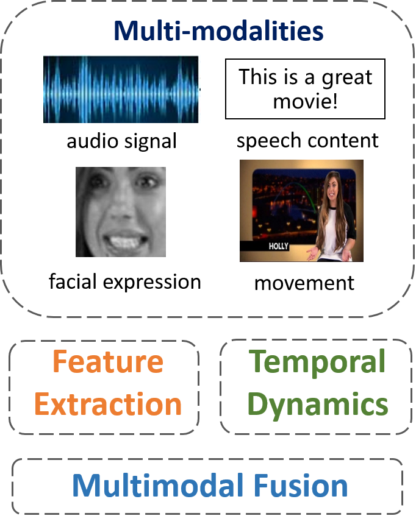
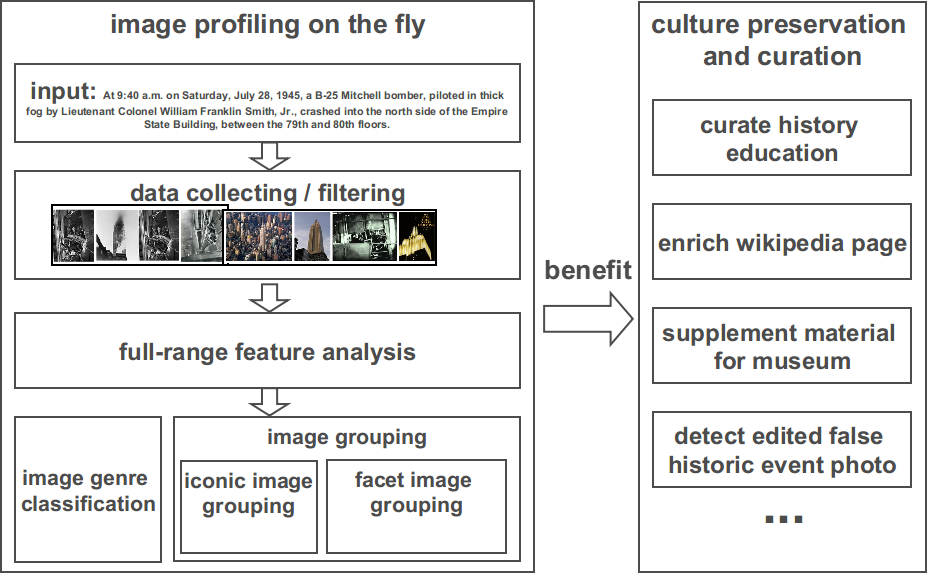
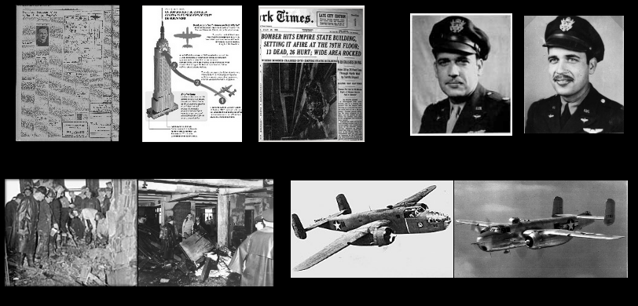
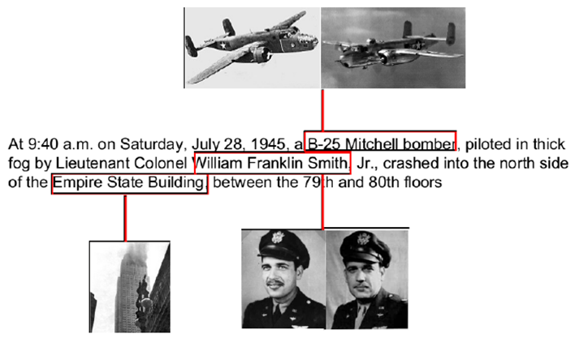

Research Overview
-
 Image/Video Description with Natural Language
Image/Video Description with Natural Language
 
Fig.1 The TGM Framework. Fig.2 The Cases of the Models. Generating natural language descriptions of visual content is an intriguing task. It has a wide range of applications such as text summarization for video preview, assisting blind people, or improving search quality for online videos. Our works focus on the following four main challenges for video captioning. 1) Multi-modalities. Different from images, a video consists of multi-modalities, such as visual and aural modality. Different modalities are complementary with each other. In our work, we extract multimodal features from image, motion, acoustic and speech and explore different multimodal fusion methods to generate better video representations. 2) Temporal movements. The objects' movements on time demension make video captioning more challenging than image captioning task. We explore the sequence models to encode temporal video contents and utilize the temporal attention mechanism to dynamically pay attention to different related segments when generating the captions. 3) Diverse topics. The topics of open-domain videos are quite diverse such as sports, cooking, news and so on. The vocabularies and expression styles for different topics vary a lot, which makes it hard to capture the complex sentence distribution. We propose the topic-guided caption model (TGM) with the guidance of automatically mined latent topics. The TGM can generate more accurate and detailed video descriptions and achieve the state-of-the-art performance on different captioning datasets. 4) Wisdom of all. Different models are complementary with each other. Therefore, we propose the ensemble and rerank strategy to assemble the wisdom of different models via modifying or selecting the best video caption.
-
Multimodal Emotion Analysis

Understanding human emotions is an important step to build natural human-computer interfaces. A wide range of applications is emerging in marketing, education, health care and entertainment that can benefit from the automatic emotion recognition. For example, service robots can improve the customer satisfaction by adjusting their reactions towards the customers’ emotion states; patients with mental diseases could be better treated with the virtual emotional companion.
Our researches focus on the emotion recognition problem with the two leading emotion models in cognitive science: the categorical emotion and the dimensional emotion. Since emotions are conveyed through multiple human behaviors, we develop our emotion recognition system using multiple modalities such as speech, verbal content, facial expression, and body movement. We explore the unimodal discriminative features, temporal dynamic of emotions and multimodal fusion strategies. Our goal is to build artificial intelligence with high emotional quotation. -
Multimedia Profiling for Historic Events

History event related knowledge is precious and multimedia such as imagery is a powerful medium that records diverse information about the event. In this work, we automatically construct an image/multimedia profile given a one sentence description of the historic event which contains where, when, who and what elements. Such a simple input requirement makes our solution easy to scale up and support a wide range of culture preservation and curation related applications ranging from wikipedia enrichment to history education. Furthermore, we automatically add explicit semantic information to image profiling by linking images in the profile with related phrases in the event description.
